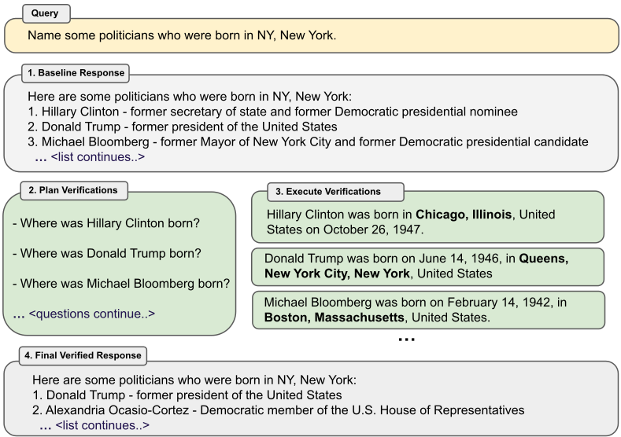
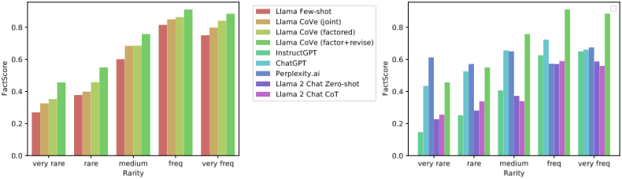
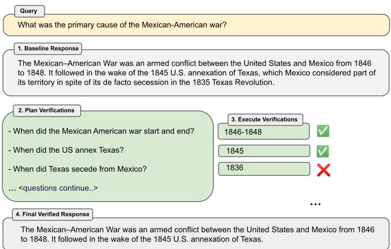
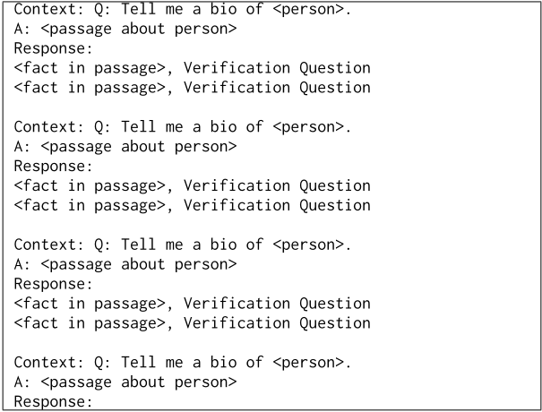
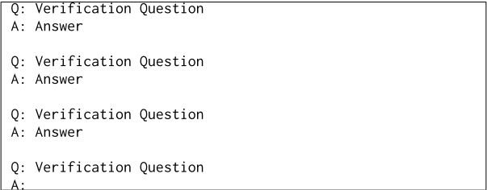
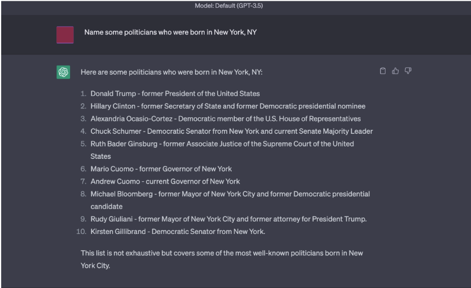
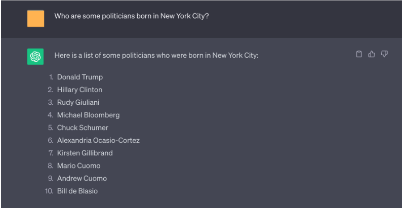
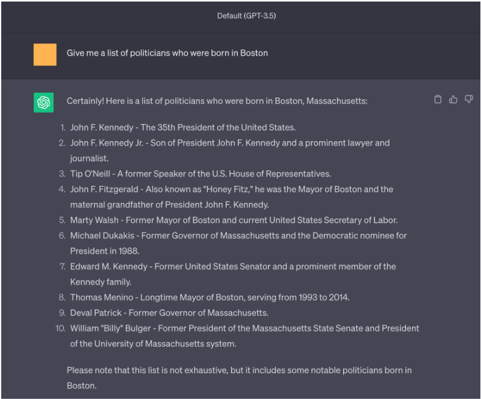

Chain-of-Verification（CoVe）减少大语言模型的幻觉
LLM 在列表问答与长文本生成中常输出看似合理但事实错误的幻觉内容，且论文实证发现指令微调模型与标准 CoT 提示并不能缓解该问题。论文提出 Chain-of-Verification (CoVe)：模型先起草初始回答，再规划一组用于核查事实的验证问题，然后独立回答这些问题（避免被原回答污染），最后基于核查结果生成修订后的最终回答；全程仅用同一个 LLM 加 few-shot 提示完成，不依赖外部检索或工具。在 Wikidata 列表问答、MultiSpanQA 与传记长文本生成上，CoVe 将 precision 从 0.17 提到 0.36、FACTSCORE 从 55.9 提到 71.4，CoVe 加持的 Llama 65B 超过 ChatGPT 与 PerplexityAI。对团队最有价值的工程结论是：factored 变体（验证问题不看到原回答）显著优于 joint 变体，说明多步 LLM 流水线中的上下文隔离是阻断幻觉复制的核心手段。
LLM 会生成看似合理但事实错误的内容（hallucination），且在多句/多段的长文本生成中因 exposure bias 等问题加剧；简单扩大训练数据或模型规模并未解决。论文研究能否让模型对自身回答进行深思以纠正错误——即不重新训练、不依赖外部工具，仅靠模型自我核查来减少事实性幻觉。
提出 Chain-of-Verification (CoVe) 四步流水线，全部通过以不同方式提示同一个基座 LLM 完成：(1) 生成 baseline 回答；(2) 基于原问题与回答规划一组验证问题（few-shot 示例驱动、非模板化，用于核查回答中的事实性断言）；(3) 执行验证并回答这些问题，含四种变体：joint（规划与执行合并在单个 prompt）、2-Step（规划与执行分离，执行时上下文只含问题）、factored（每个问题独立 prompt 且不包含原回答，可并行批量执行）、factor+revise（额外用显式 cross-check prompt 逐条判断验证答案与原回答是否不一致）；(4) 汇总验证问答对生成最终修订回答。核心手段是控制各步骤 prompt 的上下文可见性，让验证回答不被原回答污染，从而避免复制已有幻觉。
Wikidata 列表任务：CoVe 将 precision 从 Llama 65B few-shot 基线的 0.17 提升至 0.36（翻倍以上）；幻觉实体（negatives）从 2.95 降至 0.68，正确实体（positives）从 0.59 降至 0.38
MultiSpanQA 闭卷 QA：F1 相对 few-shot 基线提升 23%（0.39 → 0.48），precision 与 recall 均有提升
长文本传记生成：FACTSCORE 相对 few-shot 基线提升 28%（55.9 → 71.4），平均事实数从 16.6 降至 12.3
factored 相对 joint 在长文本上 FACTSCORE 从 60.8 提升至 63.7；factor+revise 进一步从 63.7 提升至 71.4
CoVe 加持的 Llama 65B 在 FACTSCORE 上超过 InstructGPT、ChatGPT 与 PerplexityAI（但 PerplexityAI 在极罕见 tail 事实上仍更优）
Wikidata 任务中 few-shot 基线列表实体仅约 17% 正确，而将每个实体作为独立验证问题询问时约 70% 回答正确
few-shot 预训练 Llama 基线在所有任务上优于指令微调的 Llama 2 Chat；标准 CoT 提示未能减少这些任务上的幻觉
LLM 生成的验证问题优于模板化 yes/no 启发式问题；开放式验证问题优于 yes/no 格式问题（Wiki-Category 任务）
与训练时修正、基于置信度/多次采样一致性检测、检索增强等已有路线不同，CoVe 是纯生成时、不依赖外部工具的单 LLM 自验证方法。区别于 self-critique 类方法直接在原回答上下文上修订，其关键创新是 factored 执行——验证问题独立回答、上下文中不出现原回答，从而阻断幻觉的复制与重复；也区别于 LM vs LM 多智能体辩论，仅使用同一个模型。此外系统比较了 LLM 生成 vs 模板化验证问题、开放式 vs yes/no 问题格式对效果的影响。
相关度级别：high
命中能力域：3.2 提示工程 | 3.3 Agent 架构与工具使用 | 3.1 上下文工程与记忆 | 3.5 评测与可靠使用
理由：CoVe 是完全在提示层面实现的多步自验证流水线，直接命中 3.2：few-shot 驱动的验证问题规划、显式 cross-check 等都是可复用的提示模式，且论文实证表明标准 CoT 对幻觉无效而 CoVe 有效，对团队提示设计有直接指导意义。其'规划验证→独立执行→交叉检查→修订'结构对应 3.3 的规划与反思及单模型执行可靠性，论文还明确指出接入检索等 tool-use 是自然扩展方向。factored 变体的核心发现——控制每个 prompt 的上下文可见性（验证问题不得看到原回答）即可阻断幻觉复制——是可直接迁移到多步流水线与 Agent harness 的上下文组织策略，对应 3.1。论文以减少幻觉为目标并在多个基准上量化评测，对应 3.5 的可靠使用与评测方法。论文自述不采用 multi-agent debate 概念，也不涉及模型训练，故 3.4 不命中。
建议动作：深入精读并做内部分享
arXiv:2309.11495v2 [cs.CL] 2023年9月25日
生成看似合理但事实上不正确的信息（即幻觉，hallucination）是大型语言模型中一个尚未解决的问题。我们研究语言模型对其所给出的回答进行深思以纠正自身错误的能力。我们提出了链式验证（Chain-of-Verification，COVE）方法：模型首先（i）起草一个初始回答；然后（ii）规划验证问题以对其草稿进行事实核查；（iii）独立回答这些问题，从而使答案不受其他回答的偏置影响；以及（iv）生成其最终经过验证的回答。在实验中，我们表明 COVE 在多种任务上减少了幻觉，这些任务包括来自 Wikidata 的基于列表的问题、闭卷 MultiSpanQA 以及长篇文本生成。
大语言模型（Large Language Models, LLMs）在包含数十亿词元（token）文本的海量文档语料库上进行训练。已有研究表明，随着模型参数数量的增加，闭卷问答（closed book QA）等任务的准确率会随之提升，并且更大的模型能够生成更多正确的事实性陈述（Radford et al., 2019; Petroni et al., 2019）。然而，即使是最大的模型仍然可能出错，尤其是在较不为人知的躯干（torso）和尾部（tail）分布事实上（Sun et al., 2023a），即那些在训练语料库中出现频率相对较低的事实。在模型出错的情况下，它们反而会生成一个通常看似合理的替代性回答（例如，一个相似但不正确的实体）。这些事实性错误的生成内容被称为幻觉（hallucinations）（Maynez et al., 2020）。此外，在由生成多个句子或段落构成的长篇任务中，由于曝光偏差（exposure bias）问题，幻觉问题可能进一步加剧（Wang & Sennrich, 2020）。
当前的语言建模研究浪潮已超越下一词预测，转而聚焦于模型的推理能力。通过鼓励语言模型在回答之前先生成内部思考或推理链（Wei et al., 2022; Adolphs et al., 2021; Wang et al., 2022; Lanchantin et al., 2023），以及通过自我批评（self-critique）来更新其初始回答（Press et al., 2022; Madaan et al., 2023），可以提升推理任务的性能。在本工作中，我们沿循这一研究路线，研究基于语言模型的推理能够以何种方式以及在何种情况下用于减少幻觉。我们提出了一种称为验证链（Chain-of-Verification, CoVe）的方法：给定一个初始草稿回答，该方法首先规划验证问题以检查其工作，然后系统地回答这些问题，从而最终生成一个经过改进的修订回答。我们发现，独立的验证问题往往能够提供比原始长篇回答中更准确的事实，从而提高整体回答的正确性。我们在一系列任务上研究了该方案的各种变体：包括基于列表的问题、闭卷问答和长篇文本生成。我们首先提出了一种从左到右联合生成整个验证链的方法，与基线语言模型相比，该方法提升了性能并减少了幻觉。然而，对于在上下文中关注其自身生成内容中已有幻觉的模型而言，往往会重复这些幻觉。因此，我们还引入了因子化（factored）变体以实现进一步改进，这些变体在所关注的上下文方面将验证链的各个步骤分离开来。我们展示了这些因子化变体如何在所考虑的全部三项任务上带来进一步的性能提升。
1

图 1：链式验证（Chain-of-Verification，CoVe）方法。给定一个用户查询，大语言模型会生成一个可能包含不准确内容的基线回答，例如事实性幻觉。我们在此展示一个 ChatGPT 未能正确回答的查询（更多细节见第 9 节）。为了改进这一点，CoVe 首先生成一组待提出验证问题的计划，然后通过回答这些问题来执行该计划，从而检查一致性。我们发现，单个验证问题通常能以比原始长篇生成中事实的原始准确度更高的准确度得到回答。最后，修订后的回答会将这些验证结果纳入考量。CoVe 的分解（factored）版本在回答验证问题时使其无法以原始回答为条件，从而避免重复并提升性能。
幻觉是语言模型生成中的一个普遍问题，出现在从摘要生成 (Maynez et al., 2020) 到开放域对话 (Roller et al., 2020) 的众多任务中，并且并未通过简单地扩大训练数据或模型规模而得到解决 (Zhang et al., 2023)。关于幻觉问题的综述，参见 Ji et al. (2023)。大多数减少幻觉的方法大致可分为三类：训练时修正、生成时修正以及通过增强（工具调用）进行修正。
在训练时修正方法中，试图通过训练或以其他方式调整模型权重，来改进编码器-解码器（encoder-decoder）或仅解码器（decoder-only）语言模型的原始从左到右生成结果，从而降低生成幻觉内容的概率。这包括使用强化学习 (Roit et al., 2023; Wu et al., 2023)、对比学习 (Chern et al., 2023b; Sun et al., 2023b) 以及其他方法 (Li et al., 2023)。
在生成时修正中，一个共同的主题是在基础大语言模型（LLM）“之上”做出推理决策，以使其更加可靠。例如，通过考虑所生成 token 的概率 (Mielke et al., 2022; Kadavath et al., 2022)。在 Manakul et al. (2023) 中，从模型中抽取多个样本以检测幻觉。在 Varshney et al. (2023) 中，利用低置信度分数识别幻觉，通过验证流程检查其正确性并加以缓解，然后继续生成。作为使用置信度分数的一种替代方案，可以利用 LLM 输出中的不一致性来检测幻觉。Agrawal et al. (2023) 同时使用了多个采样和一致性检测，通过提出直接和间接的查询来检查是否存在幻觉引用。Cohen et al. (2023) 提出了一种名为 LM vs LM 的方法，该方法模拟两个 LLM 之间的交互式设置，其中一个 LLM 充当考官，通过反复交叉质询来测试输出是否一致。Cohen et al. (2023) 表明，在问答（QA）任务中利用不一致性进行幻觉检测的效果可以优于使用置信度分数。COVE 也采用了一种相关的自一致性方法，但没有采用多智能体（multi-LLM）辩论的概念。
2
第三种方法是使用外部工具来帮助缓解幻觉，而不是仅仅依赖语言模型自身的能力。例如，检索增强生成（RAG）可以通过使用事实性文档进行接地（grounding）(Shuster et al., 2021; Jiang et al., 2023b; Yu et al., 2023) 或思维链（CoT）验证 (Zhao et al., 2023) 来减少幻觉。其他方法包括使用工具进行事实核查 (Chern et al., 2023a; Galitsky, 2023; Peng et al., 2023)，或者以附带出处标注的方式链接到外部文档 (Menick et al., 2022; Rashkin et al., 2023; Gao et al., 2023)。
在改进逻辑与数学任务的推理方面，也有许多相关工作，尽管它们并未明确以减少幻觉为目标。已有若干方法被证明能够通过系统执行扩展的推理步骤来提升结果，例如思维链（chain-of-thought，CoT）（Wei et al., 2022）、演绎验证（Ling et al., 2023）以及自我验证（Miao et al., 2023; Jiang et al., 2023a; Weng et al., 2022）。后者尝试在给定答案的条件下预测（被遮蔽的）数学问题，并以此作为该答案为正确解的证据。
我们的方法假设能够访问一个基础大语言模型（LLM）——尽管它可能容易产生幻觉——但能够以少样本（few-shot）或零样本（zero-shot）的方式接受通用指令的提示。我们方法的一个关键假设是：该语言模型在得到恰当提示的情况下，能够生成并执行一个关于如何对自身进行验证的计划，以检查自己的工作，并最终将这一分析融入到一个改进后的回答中。
因此，我们将这一整体流程称为验证链（Chain-of-Verification，CoVe），它执行四个核心步骤：
上述每个步骤都是通过以不同方式提示同一个 LLM 来获得所需响应的。虽然步骤 (1)、(2) 和 (4) 均可通过单个提示来调用，但我们研究了步骤 (3) 的多种变体，包括联合（joint）、两步（2-step）和因子分解（factored）版本。这些变体分别涉及单个提示、两个提示，或针对每个问题使用独立的提示，其中更精细的分解能够带来更好的结果。
我们将在下文更详细地描述这些步骤。该方法的概览如图 1 所示，在附录中则如图 3 所示。
给定一个查询，我们像往常一样使用 LLM 从左到右进行生成，不使用任何特殊技巧。虽然这是 CoVe 流程的第一步，但它同时也充当了我们实验中希望改进的基线（也就是说，我们将直接把该基线响应与我们整体方法最终得到的经过验证的响应进行比较）。
鉴于这类基线生成结果通常容易出现幻觉，CoVe 会在后续步骤中尝试识别这些幻觉并加以纠正。
3
以原始查询和基线响应为条件，通过提示引导模型生成一系列验证问题，用于检验原始基线响应中的事实性陈述。例如，如果模型长篇响应中的一部分包含“美墨战争（Mexican-American War）是 1846 年至 1848 年间美国与墨西哥之间的一场武装冲突”这一陈述，那么用于核查这些日期的一个可能的验证问题可以是“美墨战争是从什么时候开始、到什么时候结束的？”。我们注意到，验证问题并不是模板化的，语言模型可以自由地以任何它想要的形式来表述这些问题，而且这些问题也不必与原文的措辞紧密对应。
在我们的实验中，我们通过向 LLM 提供由（响应，验证）示例构成的少样本（few-shot）提示来执行这种验证规划。我们将在实验中使用的少样本提示见第 8 节。我们注意到，对于性能足够强、指令遵循能力良好的 LLM，这一步也可以以零样本（zero-shot）方式完成。
Factor+Revise 在回答完验证问题之后，整个 CoVe 流水线还需要以隐式或显式的方式交叉检查（cross-check）这些答案是否表明其与原始响应存在不一致。在 factor+revise 方法中，我们通过一个额外的 LLM 提示将这一步作为一个明确的步骤来执行，这可能使最终系统更容易显式地对这一步进行推理。与回答验证问题不同，交叉检查阶段需要同时以基线响应以及验证问题和答案为条件。因此，我们将这一步作为单独的 LLM 提示来执行，即针对每个问题使用一个“交叉检查”（cross-check）提示，并同样附带一组展示期望输出的少样本示例。例如，如果原始基线响应中包含短语“It followed in the wake of the 1845 U.S. annexation of Texas. . .”，而 CoVe 生成了一个验证问题“When did Texas secede from Mexico?”，其答案为 1836，那么这一步就应当检测到这种不一致。
4
最后，生成考虑了验证结果的改进响应。这一步通过一个最终的少样本提示来执行，其上下文纳入了之前所有的推理步骤、基线响应以及验证问答对，从而能够进行修正。如果采用了 3.3 小节中的 Factor+Revise 方法，则还会同时提供交叉检查不一致性检测的输出。
我们使用多种实验基准测试（benchmark）来衡量 CoVe 在减少幻觉方面的效果，并与多个基线进行对比。
我们使用的基准测试范围涵盖从基于列表的问题（其所需答案为一组实体），到答案为多个自由格式句子的长篇生成。
我们首先在一组利用 Wikidata API 1 自动生成的问题上对 CoVe 进行测试。我们创建如下形式的列表型问题：“有哪些出生于[城市]的[职业]？”。例如，“有哪些出生于波士顿的政治家？”。这些问题的答案是一组实体，其标准答案列表来自 Wikidata 知识库。由此得到一个包含 56 个测试问题的数据集，每个问题通常包含 ∼ 600 个已知的标准答案实体，但大语言模型（LLM）通常生成的列表要短得多。随后，我们使用精确率指标（微平均）来衡量性能，此外还报告所生成的正例实体与负例实体的平均数量。
随后，我们转向一项难度更高的集合生成任务。我们使用 QUEST（Malaviya et al., 2023）数据集，该数据集基于 Wikipedia 分类列表构建。我们只需在这些分类名称前加上“列举一些”（Name some）即可将其转换为问题。由于问题的多样性，例如“列举一些墨西哥动画恐怖片”或“列举一些越南特有兰花”，我们认为该任务可能构成更大的挑战。我们整理了数据集中所有不需要逻辑运算的样例，构建出一组共 55 个测试问题，每个问题包含 ∼ 8 个答案。与 Wikidata 任务类似，我们使用精确率指标（微平均）来衡量性能，此外还报告所生成的正例实体与负例实体的平均数量。
我们接下来在一个阅读理解基准测试（benchmark）上测试我们的方法，即 MultiSpanQA（Li et al., 2022）。MultiSpanQA 由具有多个独立答案的问题组成（这些答案源自文本中一系列多个不连续的片段，问题最初来自 Natural Questions 数据集）。我们考虑闭卷（closed-book）设定，即不提供支持文档，因此我们选取其中事实型（factoid-based）问题的子集，使我们的基础大语言模型（LLM）更有可能回答这些问题。因此，我们使用了一个由 418 个问题组成的测试集，其中每个片段的答案较短（每项最多 3 个 token）。例如，Q: 谁发明了第一台印刷机，是在哪一年？, A: Johannes Gutenberg, 1450 。
1 https://query.wikidata.org/
5
| LLM | Wikidata (Easier).Method | Wikidata (Easier).Prec. ( ↑ ) | Wikidata (Easier).Pos. | Wiki-Category list (Harder).Neg. | Wiki-Category list (Harder).Prec. ( ↑ ) | Wiki-Category list (Harder).Pos. | Wiki-Category list (Harder).Neg. |
|---|---|---|---|---|---|---|---|
| Llama 2 70B Chat | Zero-shot | 0.12 | 0.55 | 3.93 | 0.05 | 0.35 | 6.85 |
| Llama 2 70B Chat | CoT | 0.08 | 0.75 | 8.92 | 0.03 | 0.3 | 11.1 |
| Llama 65B | Few-shot | 0.17 | 0.59 | 2.95 | 0.12 | 0.55 | 4.05 |
| Llama 65B | CoVe (joint) | 0.29 | 0.41 | 0.98 | 0.15 | 0.3 | 1.69 |
| Llama 65B | CoVe (two-step) | 0.36 | 0.38 | 0.68 | 0.21 | 0.5 | 0.52 |
| Llama 65B | CoVe (factored) | 0.32 | 0.38 | 0.79 | 0.22 | 0.52 | 1.52 |
| LLM | Wikidata (Easier).Method | Wikidata (Easier).Prec. ( ↑ ) | Wikidata (Easier).Pos. | Wiki-Category list (Harder).Neg. | Wiki-Category list (Harder).Prec. ( ↑ ) | Wiki-Category list (Harder).Pos. | Wiki-Category list (Harder).Neg. |
表 1：Wikidata 与 Wiki-Category 列表任务中，基于列表的问题的测试精确率以及正例与负例（幻觉）实体的平均数量。
接下来，我们在长篇文本生成任务上验证 CoVe 的性能。在这一设定下，我们采用 Min et al. (2023) 提出的基准测试，在传记生成任务上评估我们的方法。此处，只需通过提示词 'Tell me a bio of <entity>' 让模型为选定实体生成一篇传记。我们使用该工作中提出的 FACTSCORE 度量（Min et al., 2023）来评估我们方法的有效性；该度量使用检索增强语言模型对响应进行事实核查（Instruct-Llama，'Llama + Retrieval + NP'），他们已证明该度量与人类判断具有良好的相关性。
我们使用 Llama 65B 这一强大的开源模型作为我们的基础 LLM（Touvron et al., 2023a），并对所有模型采用贪心解码（greedy decoding）。由于 Llama 65B 未经指令微调（instruction fine-tuning），我们针对每个任务采用特定的少样本（few-shot）示例来测量其在各基准测试（benchmark）上的性能。这作为我们的主要基线，CoVe 力图在此基础上加以改进。CoVe 使用相同的 Llama 65B 基础模型，但按照图 1 和第 3 节的做法，在相同的少样本示例中加入了验证问题以及最终经验证响应的演示。这样，我们测量的是同一 LLM 相对于原始基线响应的改进能力。对于 CoVe，我们比较了不同的变体，特别是在所有任务上比较联合（joint）版本和分解（factored）版本。
我们还与经过指令微调的 Llama 模型进行了比较，为此我们使用 Llama 2（Touvron et al., 2023b）。我们测量了任务上的零样本（zero-shot）性能，以及通过在零样本提示中添加 "Let's think step by step" 而实现的带思维链（chain-of-thought, CoT）的零样本性能。我们发现，指令微调模型在被查询时往往会生成无关内容。这对于基于列表的任务尤其可能成为问题。为了解决这一问题，我们在提示中额外添加了一行：" List only the answers separated by a comma "。我们还增加了另一层后处理，通过使用现成的命名实体识别（NER）模型来提取答案，以进一步避免该问题，因为这样做确实有所帮助。然而，我们仍然期望少样本方法能在此基础上带来改进，尤其是对于 Multi-Span-QA 这类任务——其答案并非全部为命名实体，而少样本示例能够有效地展示该任务的领域范围。
对于传记的长文本生成，我们还与 Min et al. (2023) 中报告的若干现有模型结果进行了比较，特别是 InstructGPT（Ouyang et al., 2022）、ChatGPT 2 和 PerplexityAI 3。
我们希望通过实证方式回答以下研究问题：
2 https://openai.com/blog/chatgpt
3 www.perplexity.ai
6
| LLM | Method | F1 ( ↑ ) | Prec. | Rec. |
|---|---|---|---|---|
| Llama 2 70B Chat | Zero-shot | 0.2 | 0.13 | 0.4 |
| Llama 2 70B Chat | CoT | 0.17 | 0.11 | 0.37 |
| Llama 65B | Few-shot | 0.39 | 0.4 | 0.38 |
| Llama 65B | CoVe (joint) | 0.46 | 0.5 | 0.42 |
| Llama 65B | CoVe (factored) | 0.48 | 0.5 | 0.46 |
| LLM | Method | F1 ( ↑ ) | Prec. | Rec. |
| LLM | Method | FACTSCORE. ( ↑ ) | Avg. # facts |
|---|---|---|---|
| InstructGPT ∗ | Zero-shot | 41.1 | 26.3 |
| ChatGPT ∗ | Zero-shot | 58.7 | 34.7 |
| PerplexityAI ∗ | Retrieval-based | 61.6 | 40.8 |
| Llama 2 70B Chat | Zero-shot | 41.3 | 64.9 |
| Llama 2 70B Chat | CoT | 41.1 | 49 |
| Llama 65B | Few-shot | 55.9 | 16.6 |
| Llama 65B | CoVe (joint) | 60.8 | 12.8 |
| Llama 65B | CoVe (factored) | 63.7 | 11.7 |
| Llama 65B | CoVe (factor+revise) | 71.4 | 12.3 |
| LLM | Method | FACTSCORE. ( ↑ ) | Avg. # facts |

我们在四个基准测试（benchmark）任务上的主要结果见表 1、表 2 和表 3，主要发现如下。
CoVe 提升了基于列表答案任务的精确率 我们发现 CoVe 在基于列表的任务上带来了精确率的大幅提升，例如在 Wikidata 任务上，相比 Llama 65B 少样本基线，精确率提升了一倍以上（从 0.17 提升到 0.36）。从正例与负例的分解来看，幻觉答案的数量大幅减少（负例：2.95 → 0.68），而非幻觉答案的数量仅有相对较小的减少（正例：0.59 → 0.38）。
CoVe 提升了闭卷问答的性能 我们还发现，CoVe 在一般问答问题上带来了改进，这以 MultiSpanQA 上的测量结果衡量。我们观察到 F1 相比少样本基线提升了 23%（0.39 → 0.48），其中改进来自精确率和召回率两方面的提升。
7
| Verification Execution.CoVe (joint) | Verification Execution.CoVe (factored) | |
|---|---|---|
| Verification Plan | Prec. | Prec. |
| Rule-based questions | 0.13 | 0.16 |
| Generated by model: yes/no questions general questions | 0.15 | 0.19 |
| 0.15 | 0.22 |
| | Verification Execution.CoVe (joint) | Verification Execution.CoVe (factored) |
CoVe 提升了长文本生成的精确率 这些结果同样延伸到长文本生成，而且我们实际上看到了比问答设置中更大的提升。FACTSCORE 相比少样本基线提升了 28%（55.9 → 71.4），同时所提供事实的平均数量同样仅有相对较小的减少（16.6 → 12.3）。我们还在图 2 中展示了在各事实上的改进分解，可以看到 CoVe 对稀有事实和较常见事实都改善了结果。
指令微调与思维链（chain-of-thought, CoT）并不能减少幻觉 我们发现，采用预训练 Llama 模型的少样本基线在所有任务上都优于指令微调模型 Llama 2 Chat。少样本示例引导模型给出符合任务预期的输出，而一般的指令微调则会产生更多幻觉或错误输出。标准的思维链（CoT）提示也无法改善这些任务的结果。虽然 CoT 已被证明对推理任务有帮助，但对于本文所测量的幻觉问题而言，它似乎不太适用。
分解式和两步式 CoVe 提升了性能 我们观察到，与联合式（joint）CoVe 相比，应用分解式（factored）CoVe 方法在所有任务上都带来了一致的性能提升。例如，长文本生成中的 FACTSCORE 从 60.8 提升到 63.7。类似地，两步式（2-step）方法也优于联合式方法，这在 Wikidata 和 Wiki-Category 列表任务上得到了验证，其中两步式在 Wikidata 上给出最佳结果，而分解式在 Wiki-Category 上最佳。所有这些结果都支持了我们的假设：验证问题不应关注原始基线回答，因为它们可能倾向于重复该回答（联合式方法就可能出现这种情况）。
**基于 LLM 的验证问题优于启发式方法** 在我们的方法 CoVe 中，验证问题由 LLM 依据具体任务生成。为了衡量这些问题的质量，我们将其与启发式构造的问题进行比较，具体做法是：对于答案中含有元素 X 的列表型问题，将 LLM 生成的问题替换为形如 'Does X answer the question' 的模板化“是/否”问题。表 4 中给出的 Wiki-Category 任务结果显示，使用基于规则的验证问题时精确率有所下降。我们认为，对于长文本生成任务，这一差异会更大，因为所需验证问题的类型可能更加多样，基于 LLM 的验证也因此变得更加必要。
**开放式验证问题优于基于“是/否”的问题** 在我们的主要实验中，我们使用的验证问题其预期答案为真实事实。另一种设置是将该事实作为验证问题的一部分，并以“是/否”的回答形式进行提问。我们在表 4 中对这一差异进行了评估，发现对于 CoVe 的因子化（factored）版本，“是/否”类型的问题表现更差。附录第 9 节中包含一些关于 ChatGPT 的个案例子，我们发现该模型在面对以“是/否”问题形式呈现的事实时，无论其正确与否都倾向于表示同意。
我们提出了验证链（Chain-of-Verification, CoVe）方法，这是一种通过让大型语言模型对其自身回答进行深思并自我纠正来减少幻觉的方法。具体而言，我们证明了通过将验证分解为一组更简单的问题，模型能够以比回答原始查询时更高的准确率来回答验证问题。其次，在回答这组验证问题时，我们证明了控制模型的注意力、使其无法关注其先前的回答（即因子化 CoVe，factored CoVe），有助于缓解对相同幻觉的复制。总体而言，我们的方法仅需让同一个模型对其回答进行深思（验证），就能相比原始语言模型的回答带来显著的性能提升。我们工作的一个显而易见的扩展是为 CoVe 配备工具调用（tool-use）能力，例如在验证执行步骤中使用检索增强（retrieval augmentation），这可能会带来进一步的收益。
虽然我们的思维链验证（Chain-of-Verification，CoVe）方法旨在减少幻觉，但它并不能将幻觉从生成内容中完全消除。这意味着，即使 CoVe 相比基线有所改进，对于给定的查询，它仍可能生成不正确或具有误导性的信息。我们还注意到，在实验中我们仅处理了以直接陈述的事实性错误这一形式出现的幻觉。然而，幻觉还可能以其他形式出现，例如出现在错误的推理步骤中，或作为观点的一部分等。我们还注意到，CoVe 生成的结果附带验证内容，如果用户查看这些内容，可为其决策增添更多可解释性，但代价是由于在输出中生成了更多 token 而增加了计算开销，这与思维链（Chain-of-Thought，CoT）等其他推理方法类似。
我们的方法旨在通过让大型语言模型花费更多时间进行深思以识别自身的错误，从而使其产生改进的回答。尽管我们已经表明这能带来明显的改进，但改进的上限显然受限于模型的整体能力，例如在识别并知晓自身所知内容方面的能力。在这方面，如第 2 节所讨论的，一条正交的研究路线是让语言模型使用外部工具，以获取超出其权重中所存储信息的更多信息。虽然我们在本工作中并未探索这一途径，但这些技术与本文的发现相结合很可能会卓有成效。
9

图 3：在长文本生成任务中，验证链（Chain-of-Verification, CoVe）Factor + Revise 方法在我们的长文本生成实验中最为有效。CoVe Factor + Revise 让模型独立识别（交叉核对）哪些事实与其已执行的验证相一致（在图中以对勾和叉号标示）。通过这一额外步骤，我们旨在舍弃不一致的事实，并利用一致的事实重新生成回答。
13
我们在下方提供长篇传记生成（longform generation of biographies）任务的提示模板，涵盖 CoVe 的不同步骤和变体（见第 3 节）。其他任务的模板与之类似，但改用来自相应任务的少样本（few-shot）示例。
Q: 请介绍一下 <person> 的传记 A: <person 的传记> Q: 请介绍一下 <person> 的传记 A: <person 的传记> Q: 请介绍一下 <person> 的传记 A: <person 的传记> Q: 请介绍一下 <person> 的传记 A:

14

上下文：<原始段落>。来自另一来源，<执行验证步骤的输出：Q + A> <执行验证步骤的输出：Q + A> 回复：<修订后且一致的段落> 上下文：<原始段落>。来自另一来源，<执行验证步骤的输出：Q + A> <执行验证步骤的输出：Q + A> 回复：<修订后且一致的段落> 上下文：<原始段落>。来自另一来源，<执行验证步骤的输出：Q + A> <执行验证步骤的输出：Q + A> 回复：<修订后且一致的段落> 上下文：<原始段落>。来自另一来源，<执行验证步骤的输出：Q + A> 回复：
15
上下文：<原始事实>。来自另一来源，<执行验证步骤的输出：Q + A> 回复：一致。<一致的事实> 上下文：<原始事实>。来自另一来源，<执行验证步骤的输出：Q + A> 回复：不一致。上下文：<原始事实>。来自另一来源，<执行验证步骤的输出：Q + A> 回复：部分一致。<一致的部分>
16


17

18
19